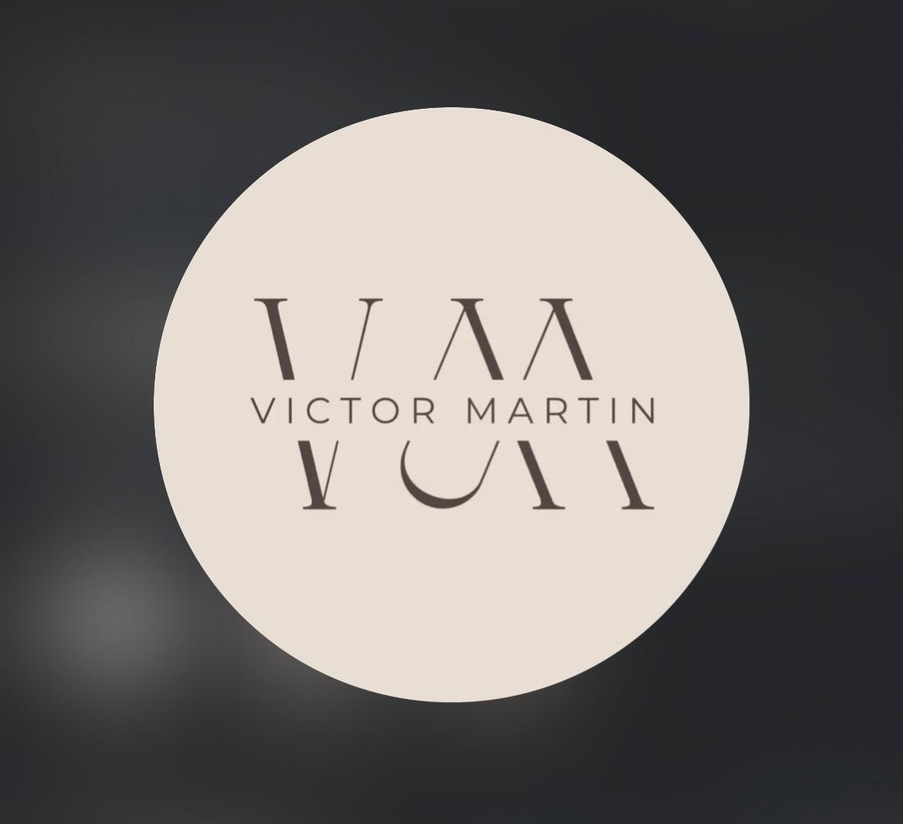

Centro de Bienestar Integral · Vigo
Masajes terapéuticos, masaje visceral, acupuntura, psicoterapia y kinesiología.
Un solo terapeuta. Una visión integral. 30 €/sesión.
Ninguno trabaja las tres dimensiones a la vez. Aquí sí.
El malestar físico tiene raíces energéticas. El bloqueo emocional se manifiesta en el cuerpo. La ansiedad no desaparece solo con relajación muscular. Víctor trabaja con los tres niveles porque la persona es una sola.
Cada sesión parte de una escucha real y llega donde hace falta llegar.
Cuerpo
Masajes terapéuticos, masaje visceral, reflexología podal y kinesiología para liberar tensión acumulada y restablecer el equilibrio físico.
Energía
Acupuntura, cráneo puntura y acupuntura zonal para regular los flujos energéticos del organismo y activar la capacidad de autocuración.
Psique
Psicoterapia profesional para trabajar los patrones mentales y emocionales que sostienen el malestar. No es solo hablar; es transformar.
Masaje visceral
Liberación de órganos y fascias abdominales
Único en VigoMasajes terapéuticos
Relajante · Descontracturante · Deportivo
Acupuntura
Regulación energética y sistémica
Cráneo puntura
Estimulación de zonas craneales terapéuticas
Acupuntura zonal
Tratamiento por zonas reflejas específicas
Psicoterapia
Ansiedad · Estrés · Bloqueos emocionales
Kinesiología
Diagnóstico y reequilibrio muscle-response
Reflexología podal
Zonas reflejas del pie · Órganos y sistemas
Sesiones individuales · Sin suscripción · Sin permanencia · Horario flexible
"Llevo 16 años acompañando a personas que sienten que algo no encaja — en el cuerpo, en la psique o en ambos. Mi trabajo es escuchar antes de actuar, y actuar donde realmente hace falta."
Con 16 años de práctica clínica en Vigo, trabaja con personas de todas las edades que buscan bienestar real, no solo alivio momentáneo. Su enfoque integra masajes terapéuticos, masaje visceral, acupuntura y medicina tradicional china, junto a psicoterapia y kinesiología.
[Texto biográfico completo de Víctor pendiente — formación, filosofía de trabajo, por qué decidió integrar estas disciplinas.]
Victor es increíble. Me fui súper relajada y con una sensación que no sabría cómo describir. Tiene unas manos de oro y además es súper amable y simpático, te sientes como en casa. Recomendable al 100%.
Vigo · Bienestar integral
Fui por unos dolores de espalda y ciática. Solo con una sesión no tuve más dolores, y ya pasó una semana desde que lo hice. Es muy bueno. Lo recomiendo 100%.
Vigo · Masaje terapéutico
Acudí por un problema mandibular y desde el primer momento dejé de sentir el dolor y presión que llevaba sintiendo las últimas semanas. También aprovechó para echarme un vistazo a la espalda y el hombro, y me alivió un montón. Muy atento — volveré.
Vigo · Tratamiento múltiple
Fui recomendada por un dolor de espalda, y para mi sorpresa no solo me alivió la parte física sino también la parte emocional que hacía que mi dolor aumentara significativamente. Un grandísimo profesional con muchísimo conocimiento y una paciencia infinita.
Vigo · Enfoque integral
Sin compromisos. Sin prisas.
Te digo honestamente si puedo ayudarte y cómo.
+34 685 106 677 · Rúa Padre Seixas, 38, Vigo · victormartincentro.com